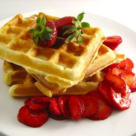

Ingredients
- 2 cups all-purpose flour
- 1 teaspoon salt
- 4 teaspoons baking powder
- 2 tablespoons white sugar
- 2 eggs
- 1 ½ cups warm milk
- ⅓ cup butter, melted
- ⅓ cup butter, melted
Steps
-
Step 1
In a large bowl, mix together flour, salt, baking powder and sugar; set aside. Preheat waffle iron to desired temperature.
-
Step 2
In a separate bowl, beat the eggs. Stir in the milk, butter and vanilla. Pour the milk mixture into the flour mixture; beat until blended.
-
Step 3
Ladle the batter into a preheated waffle iron. Cook the waffles until golden and crisp. Serve immediately.
BACK UP
Home